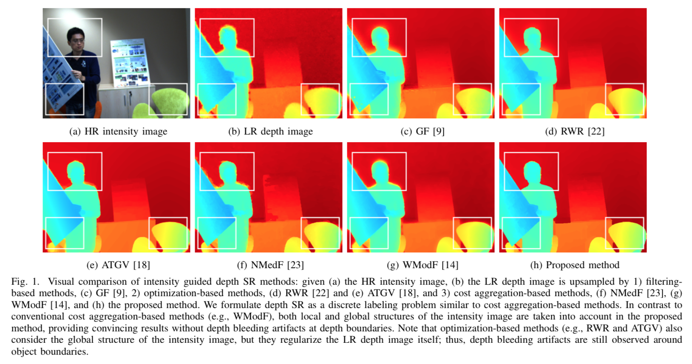

| Bumsub Ham1 | Dongbo Min2 | Kwanghoon Sohn3 |
| 1INRIA | 2Chungnam National Univ. | 3Yonsei Univ. |
|  |
Abstract
This paper presents a depth super-resolution (SR) method that uses both of a low-resolution (LR) depth image and a high-resolution (HR) intensity image. We formulate depth SR as a graph-based transduction problem. Specifically, the HR intensity image is represented as an undirected graph, in which pixels are characterized as vertices, and their relations are encoded as an affinity function. When the vertices initially labeled with certain depth hypotheses (from the LR depth image) are regarded as input queries, all the vertices are scored with respect to the relevances to these queries by a classifying function. Each vertex is then labeled with the depth hypothesis that receives the highest relevance score. We design the classifying function by taking into account the local and global structures of the HR intensity image. This approach enables us to address a depth bleeding problem that typically appears in current depth SR methods. Furthermore, input queries are assigned in a probabilistic manner, making depth SR robust to noisy depth measurements. We also analyze existing depth SR methods in the context of transduction, and discuss their theoretic relations. Intensive experiments demonstrate the superiority of the pro- posed method over state-of-the-art methods both qualitatively and quantitatively.
Paper: PDF
Code: comming soon
Results:
Depth SR w/ Middlebury data set (zip), 3.3MB
Depth SR w/ ADSC data set (zip), 1.9MB
Depth SR w/ with GRAZ data set (zip), 3.9MB
BibTex
@article{Ham15tip, author = {Bumsub Ham and Dongbo Min and and Kwanghoon Sohn}, title = {Depth Super-Resolution by Transduction}, journal = {IEEE Trans. on Image Process. (TIP)}, year = {2015}, month = {May} }
Last updated: Februray, 2015